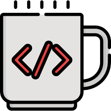

O que fazem as linguagems de programaçao web ?? 
uma Linguagem de programação web é usadas propriamente para o desenvolvimento do entendido como camadas de negócio de apresentação, assim como para a construção da lógica de negócios dos websites, portais, e aplicações web de modo geral.
Afinal o que é a programação web ??
Quando falamos de programação web, a primeira coisa que vem à mente é uma programação de sites, certo?
A primeira coisa que podemos te dizer é que não se trata apenas disso. Imagine que você vai passar um tempo em outro país em que existem diversos dialetos e para se comunicar com os diferentes povos você precisará aprender todos eles. Imaginou?
Bem, com os computadores funciona mais ou menos da mesma maneira. Nós temos que aprender as linguagens de programação para que a máquina responda aos nossos comandos. a programação web é justamente esta comunicação, que consegue traduzir as informações para que o computador interprete e devolva um resultado ao usuário final.
Principais linguagens para programação web
- HTML
HTML não é propriamente uma linguagem de programação, mas sim de marcação. É composta por uma espécie de pacote de códigos com regras e normas que definem como será exibido cada elemento que compõe uma página que é exibida.
- CSS

Juntamente com a HTML, é utilizada para definir o layout da página. É a linguagem que vai definir as cores, tipografias, formas, bordas e tudo que for relevante para os conceitos estéticos de um website.
- Javascript

Javascript é uma das principais linguagens de programação utilizadas para programar os scripts executados no navegador do usuário sempre que ele acessa um site. Ou seja, é a responsável pelas interações e comportamento dos elementos dentro da página, tornando os processos ali contidos em uma experiência com melhor fluidez e dinamismo.
- PHP

Este é um dos tipos de linguagem de script em que, geralmente, o código é inserido ou embutido no próprio HTML. É usada para que, em casos como esse, o código seja executado apenas do lado do servidor e passado para o cliente final apenas como um HTML puro, possibilitando uma interação com banco de dados sem que fique exposto. É ideal para a implementação de funções mais dinâmicas e complexas dentro de websites e aplicações Web.